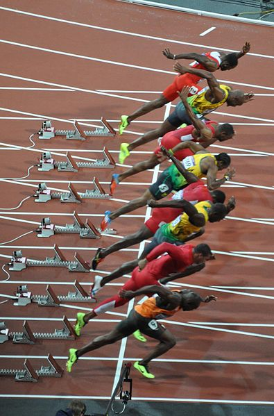

Figure:
[edit]
We have state vector $\inputMatrix = \left[\inputVector_1 \dots \inputVector_\latentDim\right] \in \mathbb{R}^{\top \times \latentDim}$ and if each state evolves independently we have
$$
\begin{align*}
p(\inputMatrix) &= \prod_{i=1}^\latentDim p(\inputVector_{:, i}) \\
p(\inputVector_{:, i}) &= \gaussianDist{\inputVector_{:, i}}{\zerosVector}{\kernelMatrix}.
\end{align*}
$$
We want to obtain outputs through:
$$
\dataVector_{i, :} = \mappingMatrix\inputVector_{i, :}
$$
gpKalmanFilterKroneckerPlot2
For this stacking the marginal distribution over time is given by the block diagonals.
Figure:
{Two Ways of Stacking
Can also stack each row of $\inputMatrix$ to form column vector:
$$\inputVector= \begin{bmatrix}
\inputVector_{1, :}\\
\inputVector_{2, :}\\
\vdots\\
\inputVector_{{T}, :}
\end{bmatrix}$$
$$p(\inputVector) = \gaussianDist{\inputVector}{\zerosVector}{\kernelMatrix\otimes \eye}$$
{Row Stacking
gpKalmanFilterKroneckerPlot3
For this stacking the marginal distribution over the latent dimensions is given by the block diagonals.
Figure:
gpKalmanFilterKroneckerPlot4
The observations are related to the latent points by a linear mapping matrix,
$$
\dataVector_{i, :} = \mappingMatrix\inputVector_{i, :} + \noiseVector_{i, :}
$$
$$
\noiseVector \sim \gaussianSamp{\zerosVector}{\dataStd^2\eye}
$$
Figure:
This leads to a covariance of the form
$$
(\eye\otimes \mappingMatrix) (\kernelMatrix \otimes \eye) (\eye \otimes \mappingMatrix^\top) + \eye\dataStd^2
$$
Using (A ⊗ B)(C ⊗ D) = AC ⊗ BD This leads to
$$
\kernelMatrix\otimes {\mappingMatrix}{\mappingMatrix}^\top + \eye\dataStd^2
$$
or
$$
\dataVector\sim \gaussianSamp{\zerosVector}{\mappingMatrix\mappingMatrix^\top \otimes \kernelMatrix + \eye\dataStd^2}
$$
[edit]
This Kronecker structure leads to several published models.
$$
(\kernelMatrix(\inputVector,\inputVector^\prime))_{\dataIndex,\dataIndex^\prime}=\kernelScalar(\inputVector,\inputVector^\prime)\kernelScalar_T(\dataIndex,\dataIndex^\prime),
$$
where $\kernelScalar$ has $\inputVector$ and $\kernelScalar_T$ has $\numData$ as inputs.
Can think of multiple output covariance functions as covariances with augmented input.
Alongside $\inputVector$ we also input the $\dataIndex$ associated with the output of interest.
Taking $\coregionalizationMatrix= {\mappingMatrix}{\mappingMatrix}^\top$ we have a matrix expression across outputs.
$$\kernelMatrix(\inputVector,\inputVector^\prime)=\kernelScalar(\inputVector,\inputVector^\prime)\coregionalizationMatrix,$$
where $\coregionalizationMatrix$ is a $\dataDim\times \dataDim$ symmetric and positive semi-definite matrix.
$\coregionalizationMatrix$ is called the coregionalization matrix.
We call this class of covariance functions separable due to their product structure.
In the same spirit a more general class of kernels is given by
$$\kernelMatrix(\inputVector,\inputVector^\prime)=\sum_{{j}=1}^\latentDim\kernelScalar_{j}(\inputVector,\inputVector^\prime)\coregionalizationMatrix_{j}.$$
This can also be written as
$$\kernelMatrix(\inputMatrix, \inputMatrix) = \sum_{{j}=1}^\latentDim\coregionalizationMatrix_{j}\otimes \kernelScalar_{j}(\inputMatrix, \inputMatrix),$$
This is like several Kalman filter-type models added together, but each one with a different set of latent functions.
We call this class of kernels sum of separable kernels (SoS kernels).
Use of GPs in Geostatistics is called kriging.
These multi-output GPs pioneered in geostatistics: prediction over vector-valued output data is known as cokriging.
The model in geostatistics is known as the linear model of coregionalization (LMC, Journel and Huijbregts (1978) Goovaerts (1997)).
Most machine learning multitask models can be placed in the context of the LMC model.
In the linear model of coregionalization (LMC) outputs are expressed as linear combinations of independent random functions.
In the LMC, each component $\mappingFunction_\dataIndex$ is expressed as a linear sum
$$\mappingFunction_\dataIndex(\inputVector) = \sum_{{j}=1}^\latentDim{w}_{\dataIndex,{j}}{u}_{{j}}(\inputVector).$$
where the latent functions are independent and have covariance functions $\kernelScalar_{{j}}(\inputVector,\inputVector^\prime)$.
The processes $\{\mappingFunction_j(\inputVector)\}_{j=1}^\latentDim$ are independent for $\latentDim \neq {j}^\prime$.
The Kalman filter is an example of the LMC where ${u}_i(\inputVector) \rightarrow {x}_i(t)$.
I.e. we’ve moved form time input to a more general input space.
In matrix notation:
If one covariance used for latent functions (like in Kalman filter).
This is called the intrinsic coregionalization model (ICM, Goovaerts (1997)).
The kernel matrix corresponding to a dataset $\inputMatrix$ takes the form
$$
\kernelMatrix(\inputMatrix, \inputMatrix) = \coregionalizationMatrix\otimes \kernelScalar(\inputMatrix, \inputMatrix).
$$
If outputs are noise-free, maximum likelihood is equivalent to independent fits of $\coregionalizationMatrix$ and $\kernelScalar(\inputVector, \inputVector^\prime)$ (Helterbrand and Cressie 1994).
In geostatistics this is known as autokrigeability (Wackernagel 2003).
In multitask learning its the cancellation of intertask transfer (Bonilla, Chai, and Williams, n.d.).
$$
\kernelMatrix(\inputMatrix, \inputMatrix) = \mappingVector\mappingVector^\top \otimes \kernelScalar(\inputMatrix, \inputMatrix).
$$
$$
\mappingVector= \begin{bmatrix} 1 \\ 5\end{bmatrix}
$$
$$
\coregionalizationMatrix= \begin{bmatrix} 1 & 5\\ 5&25\end{bmatrix}
$$
[edit]

|
Figure: Intrinsic coregionalization model covariance function.
$$
\kernelMatrix(\inputMatrix, \inputMatrix) = \coregionalizationMatrix\otimes \kernelScalar(\inputMatrix, \inputMatrix).
$$
$$
\coregionalizationMatrix= \begin{bmatrix} 1 & 0.5\\ 0.5& 1.5\end{bmatrix}
$$
$$\kernelMatrix(\inputMatrix, \inputMatrix) = \coregionalizationMatrix_1 \otimes \kernelScalar_1(\inputMatrix, \inputMatrix) + \coregionalizationMatrix_2 \otimes \kernelScalar_2(\inputMatrix, \inputMatrix)$$
$$\coregionalizationMatrix_1 = \begin{bmatrix} 1.4 & 0.5\\ 0.5& 1.2\end{bmatrix}$$
ℓ1 = 1
$$\coregionalizationMatrix_2 = \begin{bmatrix} 1 & 0.5\\ 0.5& 1.3\end{bmatrix}$$
ℓ2 = 0.2
Used in machine learning for GPs for multivariate regression and in statistics for computer emulation of expensive multivariate computer codes.
Imposes the correlation of the outputs explicitly through the set of coregionalization matrices.
Setting $\coregionalizationMatrix = \eye_\dataDim$ assumes outputs are conditionally independent given the parameters $\parameterVector$. (Minka and Picard 1997; Lawrence and Platt 2004; Yu, Tresp, and Schwaighofer 2005).
More recent approaches for multiple output modeling are different versions of the linear model of coregionalization.
Coregionalization matrices are rank 1 Teh, Seeger, and Jordan (n.d.). rewrite equation as
$$\kernelMatrix(\inputMatrix, \inputMatrix) = \sum_{{j}=1}^\latentDim\mappingVector_{:, {j}}\mappingVector^{\top}_{:, {j}} \otimes \kernelScalar_{j}(\inputMatrix, \inputMatrix).$$
Like the Kalman filter, but each latent function has a different covariance.
Authors suggest using an exponentiated quadratic characteristic length-scale for each input dimension.
[edit]
K, anim=plot.animate_covariance_function(mlai.compute_kernel,
kernel=slfm_cov, subkernel=eq_cov,
W = np.asarray([[1],[5]])
$$
\kernelMatrix(\inputMatrix, \inputMatrix) = \mappingVector_{:, 1}\mappingVector_{:, 1}^\top \otimes \kernelScalar_1(\inputMatrix, \inputMatrix) + \mappingVector_{:, 2} \mappingVector_{:, 2}^\top \otimes \kernelScalar_2(\inputMatrix, \inputMatrix)
$$
$$
\mappingVector_1 = \begin{bmatrix} 0.5 \\ 1\end{bmatrix}
$$
$$
\mappingVector_2 = \begin{bmatrix} 1 \\ 0.5\end{bmatrix}
$$
Bonilla, Chai, and Williams (n.d.) suggest ICM for multitask learning.
Use a PPCA form for $\coregionalizationMatrix$: similar to our Kalman filter example.
Refer to the autokrigeability effect as the cancellation of inter-task transfer.
Also discuss the similarities between the multi-task GP and the ICM, and its relationship to the SLFM and the LMC.
Mostly restricted to the case where the outputs are conditionally independent given the hyperparameters ϕ (Minka and Picard 1997; Williams and Barber 1998; Lawrence and Platt 2004; Seeger and Jordan 2004; Yu, Tresp, and Schwaighofer 2005; Rasmussen and Williams 2006).
Intrinsic coregionalization model has been used in the multiclass scenario. Skolidis and Sanguinetti (2011) use the intrinsic coregionalization model for classification, by introducing a probit noise model as the likelihood.
Posterior distribution is no longer analytically tractable: approximate inference is required.
A statistical model used as a surrogate for a computationally expensive computer model.
Higdon et al. (2008) use the linear model of coregionalization to model images representing the evolution of the implosion of steel cylinders.
In Conti and O’Hagan (2009) use the ICM to model a vegetation model: called the Sheffield Dynamic Global Vegetation Model Woodward, Lomas, and Betts (1998).
[edit]
|

Image from Wikimedia Commons http://bit.ly/16kMKHQ by Darren Wilkinson
|
The first think we will look at is a multiple output model. Our aim is to jointly model all sprinting events from olympics since 1896. Data is provided by Rogers & Girolami’s “First Course in Machine Learning”. Firstly, let’s load in the data.
pods.datasets.authorize_download = lambda x: True # prevents requesting authorization for download.
data = pods.datasets.olympic_sprints()
X = data['X']
y = data['Y']
print(data['info'], data['details'])When using data sets it’s good practice to cite the originators of the data, you can get information about the source of the data from data['citation']
The data consists of all the male and female sprinting data for 100m, 200m and 400m since 1896 (six outputs in total). The ouput information can be found from: data['output_info']
In GPy we deal with multiple output data in a particular way. We specify the output we are interested in for modelling as an additional input. So whilst for this data, normally, the only input would be the year of the event. We additionally have an input giving the index of the output we are modelling. This can be seen from examining data['X'].
print('First column of X contains the olympic years.')
print(data['X'][:, 0])
print('Second column of X contains the event index.')
print(data['X'][:, 1])Now let’s plot the data
Figure: Olympic sprint gold medal winning times from Rogers and Girolami (2011).
In the plot above red is women’s events, blue is men’s. Squares are 400 m, crosses 200m and circles 100m. Not all events were run in all years, for example the women’s 400 m only started in 1964.
[edit]
We will perform a multi-output Gaussian process fit to the data, we’ll do this using the GPy software.
We will look at modelling the data using coregionalization approaches described in this morning’s lecture. We introduced these approaches through the Kronecker product. To indicate we want to construct a covariance function of this type in GPy we’ve overloaded the ** operator. Stricly speaking this operator means to the power of (like ^ in MATLAB). But for covariance functions we’ve used it to indicate a tensor product. The linear models of coregionalization we introduced in the lecture were all based on combining a matrix with a standard covariance function. We can think of the matrix as a particular type of covariance function, whose elements are referenced using the event indices. I.e. k(0, 0) references the first row and column of the coregionalization matrix. k(1, 0) references the second row and first column of the coregionalization matrix. Under this set up, we want to build a covariance where the first column from the features (the years) is passed to a covariance function, and the second column from the features (the event number) is passed to the coregionalisation matrix. Let’s start by trying a intrinsic coregionalisation model (sometimes known as multitask Gaussian processes). Let’s start by checking the help for the Coregionalize covariance.
The coregionalize matrix, B, is itself is constructed from two other matrices, B = WW⊤ + diag(κ). This allows us to specify a low rank form for the coregionalization matrix. However, for our first example we want to specify that the matrix B is not constrained to have a low rank form.
Note here that the rank we specify is that of the WW⊤ part. When this part is combined with the diagonal matrix from κ the matrix B is totally general. This covariance function can now be used in a standard Gaussian process regression model. Let’s build the model and optimize it.
We can plot the results using the ability to ‘fix inputs’ in the model.plot() function. We can specify that column 1 should be fixed to event number 2 by passing fixed_inputs = [(1, 2)] to the model. To plot the results for all events on the same figure we also specify fignum=1 in the loop as below.
Figure: Gaussian process fit to the Olympic Sprint data.
There is a lot we can do with this model. First of all, each of the races is a different length, so the series have a different mean. We can include another coregionalization term to deal with the mean. Below we do this and reduce the rank of the coregionalization matrix to 1.
kern1 = GPy.kern.RBF(1, lengthscale=80)**GPy.kern.Coregionalize(1, output_dim=6, rank=1)
kern2 = GPy.kern.Bias(1)**GPy.kern.Coregionalize(1,output_dim=6, rank=1)
kern = kern1 + kern2Figure: Gaussian process fit to the Olympic Sprint data.
This is a simple form of the linear model of coregionalization. Note how confident the model is about what the women’s 400 m performance would have been. You might feel that the model is being over confident in this region. Perhaps we are forcing too much sharing of information between the sprints. We could return to the intrinsic coregionalization model and force the two base covariance functions to share the same coregionalization matrix.
kern1 = GPy.kern.RBF(1, lengthscale=80) + GPy.kern.Bias(1)
kern2 = GPy.kern.Coregionalize(1, output_dim=6, rank=5)
kern = kern1**kern2Figure: Gaussian process fit to the Olympic Sprint data.
Predictions in the multioutput case can be very effected by our covariance function design. This reflects the themes we saw on the first day where the importance of covariance function choice was emphasized at design time.
For more information on these subjects and more you might want to check the following resources.
Bonilla, Edwin V., Kian Ming Chai, and Christopher K. I. Williams. n.d. “Multi-Task Gaussian Process Prediction.” In.
Conti, Stefano, and Anthony O’Hagan. 2009. “Bayesian Emulation of Complex Multi-Output and Dynamic Computer Models.” Journal of Statistical Planning and Inference 140 (3): 640–51. https://doi.org/doi:10.1016/j.jspi.2009.08.006.
Goovaerts, Pierre. 1997. Geostatistics For Natural Resources Evaluation. Oxford University Press.
Helterbrand, Jeffrey D., and Noel A. C. Cressie. 1994. “Universal Cokriging Under Intrinsic Coregionalization.” Mathematical Geology 26 (2): 205–26.
Higdon, David M., Jim Gattiker, Brian Williams, and Maria Rightley. 2008. “Computer Model Calibration Using High Dimensional Output.” Journal of the American Statistical Association 103 (482): 570–83.
Journel, Andre G., and Charles J. Huijbregts. 1978. Mining Geostatistics. London: Academic Press.
Lawrence, Neil D., and John C. Platt. 2004. “Learning to Learn with the Informative Vector Machine.” In, 512–19. https://doi.org/10.1145/1015330.1015382.
Minka, Thomas P., and Rosalind W. Picard. 1997. “Learning How to Learn Is Learning with Point Sets.” Available on-line. http://research.microsoft.com/en-us/um/people/minka/papers/point-sets.html.
Rasmussen, Carl Edward, and Christopher K. I. Williams. 2006. Gaussian Processes for Machine Learning. Cambridge, MA: mit.
Rogers, Simon, and Mark Girolami. 2011. A First Course in Machine Learning. CRC Press.
Seeger, Matthias, and Michael I. Jordan. 2004. “Sparse Gaussian Process Classification with Multiple Classes.” 661. Department of Statistics, University of California at Berkeley.
Skolidis, Grigorios, and Guido Sanguinetti. 2011. “Bayesian Multitask Classification with Gaussian Process Priors.” IEEE Transactions on Neural Networks 22 (12): 2011–21.
Teh, Yee Whye, Matthias Seeger, and Michael I. Jordan. n.d. “Semiparametric Latent Factor Models.” In, 333–40.
Wackernagel, Hans. 2003. Multivariate Geostatistics: An Introduction with Applications. 3rd ed. springer.
Williams, Christopher K. I., and David Barber. 1998. “Bayesian Classification with Gaussian Processes.” IEEE Transactions on Pattern Analysis and Machine Intelligence 20 (12): 1342–51.
Woodward, Ian, Mark R. Lomas, and Richard A. Betts. 1998. “Vegetation-Climate Feedbacks in a Greenhouse World.” Philosophical Transactions: Biological Sciences 353 (1365): 29–39.
Yu, Kai, Volker Tresp, and Anton Schwaighofer. 2005. “Learning Gaussian Processes from Multiple Tasks.” In Proceedings of the 22nd International Conference on Machine Learning (Icml 2005), 1012–9.